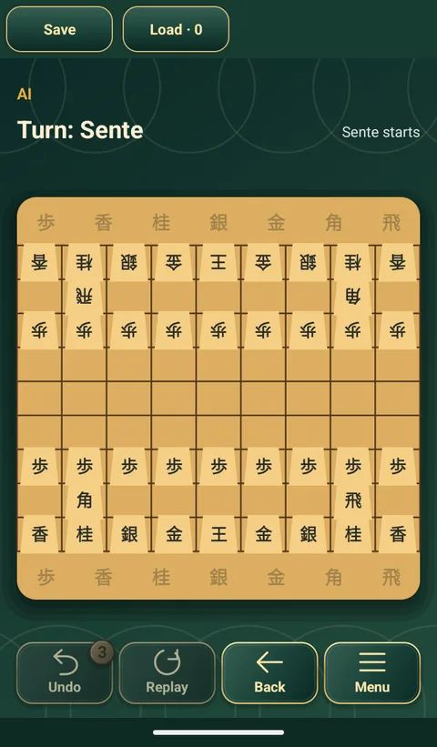

Trò chơi bàn cổ điển › Trò chơi › Shogi

Shogi
Cờ tướng Nhật · 将棋
Cờ Nhật Bản trên bàn 9×9, nơi quân bị bắt không mất hẳn: bạn giữ nó trong tay và có thể thả lại bàn cờ như quân của mình.
Cách chơi và luật Shogi
- Mục tiêu: chiếu bí Vua của đối phương.
- Mặc định Sente đi trước; có thể đổi sang Gote trước khi bắt đầu. Hai bên lần lượt đi một quân trên bàn hoặc thả một quân trong tay.
- Vua đi một ô mọi hướng. Kim tướng đi một ô ngang, dọc hoặc chéo về trước. Ngân tướng đi một ô chéo hoặc thẳng về trước. Phía trước là phía đối phương.
- Phi xa đi ngang hoặc dọc, Giác hành đi chéo, Hương xa chỉ đi thẳng về trước, bao nhiêu ô cũng được. Cả ba không được nhảy qua quân.
- Tốt đi thẳng về trước một ô. Quế mã nhảy hai ô về trước và một ô sang bên, vượt qua quân chắn. Chọn quân để xem ô đi hợp lệ; không được để Vua mình bị chiếu.
- Đi vào ô có quân địch để bắt nó. Quân bắt được thuộc về bạn, trở lại trạng thái chưa phong cấp và được giữ trong tay để thả sau.
- Chỉ thả vào ô trống. Một cột không được có hai Tốt chưa phong cấp của bạn. Không thả Tốt, Hương xa hoặc Quế mã vào nơi chúng không bao giờ đi được; không thả Tốt để chiếu hết ngay.
- Trừ Vua và Kim tướng, quân chưa phong cấp có thể phong khi nước đi bắt đầu hoặc kết thúc trong ba hàng cuối bên đối phương. Thả quân không được phong cấp.
- Có thể không phong cấp, trừ khi Tốt, Hương xa hoặc Quế mã không còn nước đi.
- Tốt, Hương xa, Quế mã và Ngân tướng sau phong cấp đi như Kim tướng. Phi xa thêm nước chéo một ô; Giác hành thêm nước ngang, dọc một ô. Phong cấp giữ đến khi bị bắt.
- Cùng một thế cờ xuất hiện bốn lần thì hòa; bên gây lặp bằng chiếu liên tục bị thua.
Shogi trong ứng dụng
- Quân cờ chữ Hán truyền thống.
- AI đi các khai cuộc quen thuộc từ thư viện có sẵn.
- Chơi với máy hoặc hai người trên một máy.
- Cùng ứng dụng miễn phí này còn 11 trò chơi cờ cổ điển khác, tất cả đều chơi được offline.

Các trò chơi khác trong ứng dụng
 Cờ thú
Cờ thú Cờ vua
Cờ vua Cờ tướng
Cờ tướng Cờ caro
Cờ caro Cờ đam
Cờ đam Cờ bốn
Cờ bốn Cờ nhảy
Cờ nhảy Lục chiến kỳ
Lục chiến kỳ Cờ Ludo
Cờ Ludo Cờ máy bay
Cờ máy bay Yutnori
YutnoriChơi Shogi miễn phí
Trên điện thoại và máy tính bảng Android, không cần mạng.